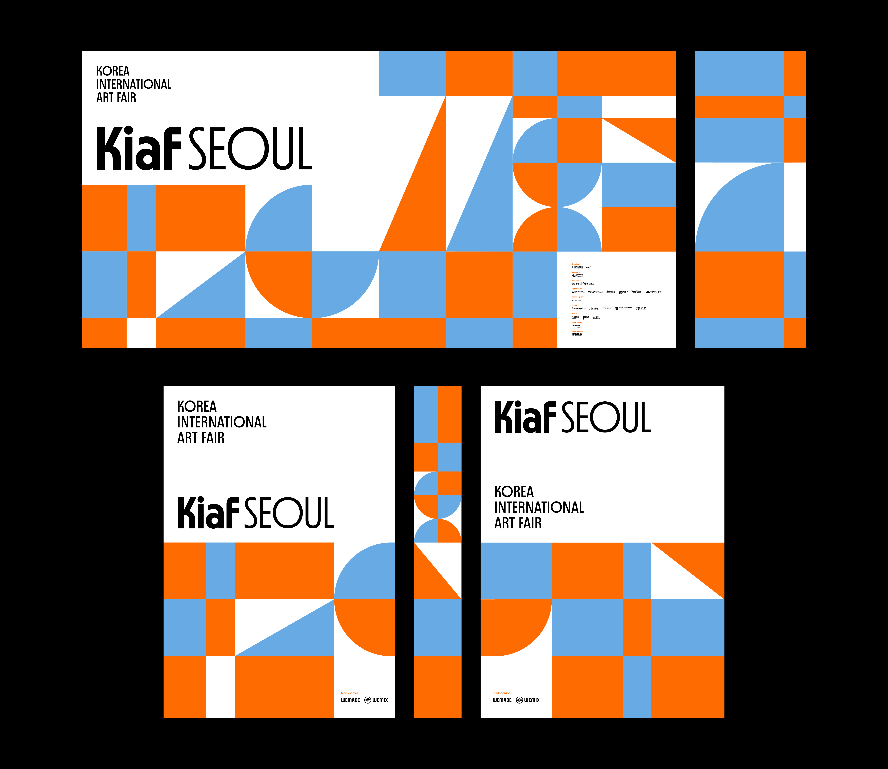
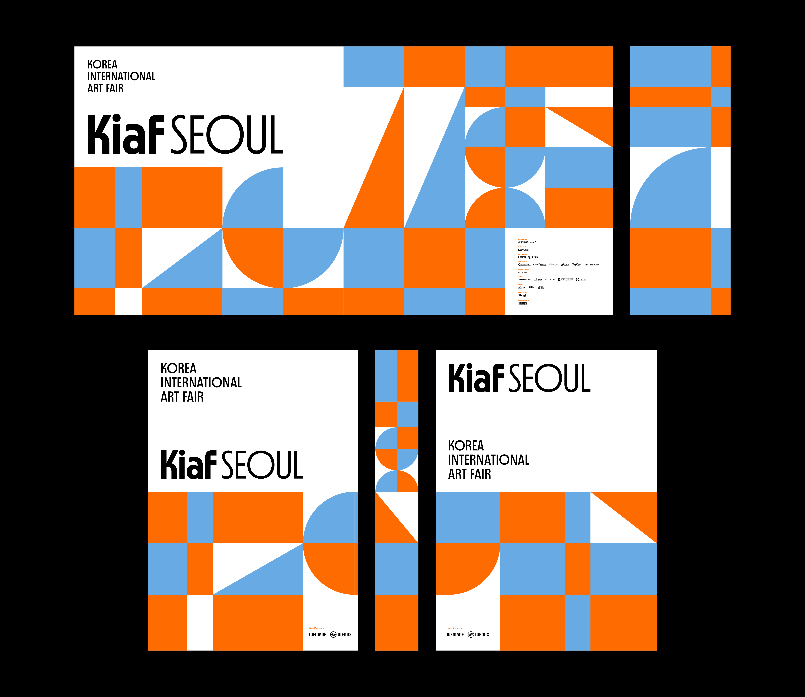
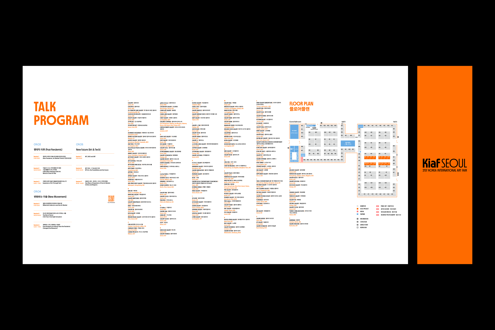
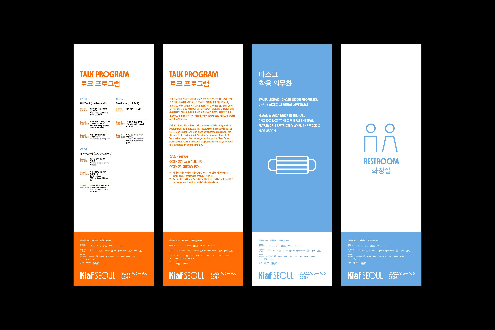
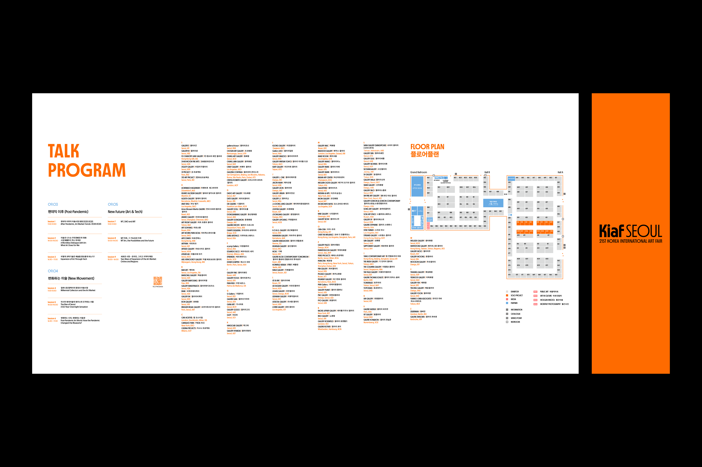
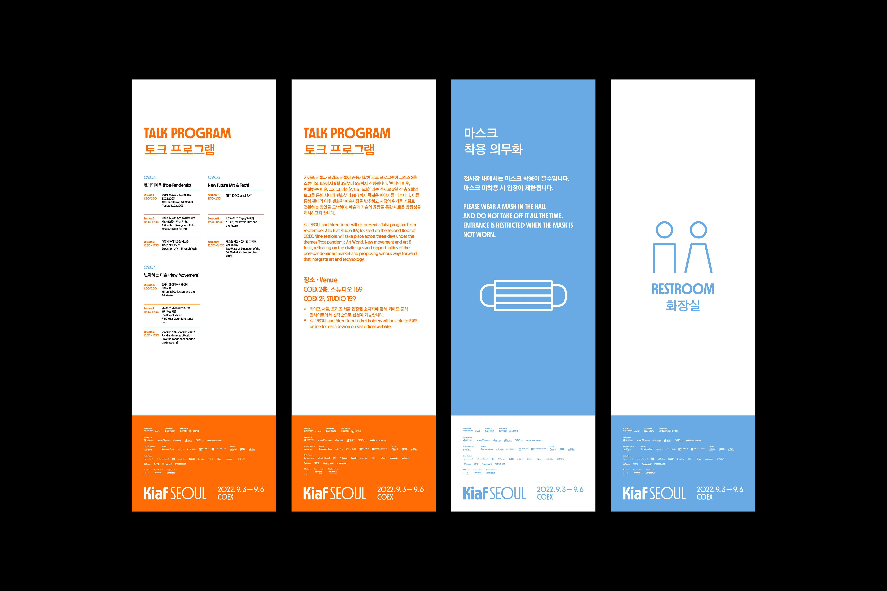

Kiaf SEOUL 2022
Exhibition Displays
Exhibition Displays
스튜디오 fnt는 2021년 키아프 20주년 기념 행사를 위해 새로운 비주얼 아이덴티티 시스템을 구축하고, 이를 기반으로 관련 그래픽 디자인을 선보였습니다. 올해도 마찬가지로 제21회 키아프
전시회의 그래픽 개발을 맡았습니다. 또한, 올해 처음 선보이는 키아프 플러스의 전시 아이덴티티와 이벤트 그래픽도 새롭게 디자인했습니다.
스튜디오 fnt의 Kiaf SEOUL 2022 프로젝트에 참여하여 전시장에 사용되는 배너, 가벽 및 기타 현장물 작업을 담당했습니다.
스튜디오 fnt의 Kiaf SEOUL 2022 프로젝트에 참여하여 전시장에 사용되는 배너, 가벽 및 기타 현장물 작업을 담당했습니다.
Related Projects
- Kiaf SEOUL 2022 Exhibition Displays
- Kiaf PLUS Exhibition Displays
- Kiaf 2022 Online, Offline ADs
- Kiaf 2021 Exhibition Displays
- Kiaf SEOUL 2022 Exhibition Displays
- Kiaf PLUS Exhibition Displays
- Kiaf 2022 Online, Offline ADs
- Kiaf 2021 Exhibition Displays
Field
Graphic
Date
Aug. 2022
Team
© studio fnt
- Art direction: Woogyung Geel
- identity system: Hyungwon Cho, Youjeong Lee
- Catalog design: Doyeon Yang (plast)
- Graphic design: Whajin Shin, Hyungwon Cho, Younghyun Song
- Motion design: Ajeong Kim
- Photo: Creative Silver, courtesy of Kiaf SEOUL, studio fnt
Galleries Association of Korea
- Year: August 2022
- Art direction: Woogyung Geel
- identity system: Hyungwon Cho, Youjeong Lee
- Catalog design: Doyeon Yang (plast)
- Graphic design: Whajin Shin, Hyungwon Cho, Younghyun Song
- Motion design: Ajeong Kim
- Photo: Creative Silver, courtesy of Kiaf SEOUL, studio fnt
Galleries Association of Korea
- Year: August 2022
 

 





Photo: Creative Silver, courtesy of Kiaf SEOUL

작업에 참여한 Kiaf SEOUL의 이미지만을 게시했습니다.
Kiaf SEOUL의 아이덴티티 및 더 많은 작업물들은 https://studiofnt.com 에서 감상이 가능합니다.
Kiaf SEOUL의 아이덴티티 및 더 많은 작업물들은 https://studiofnt.com 에서 감상이 가능합니다.
×